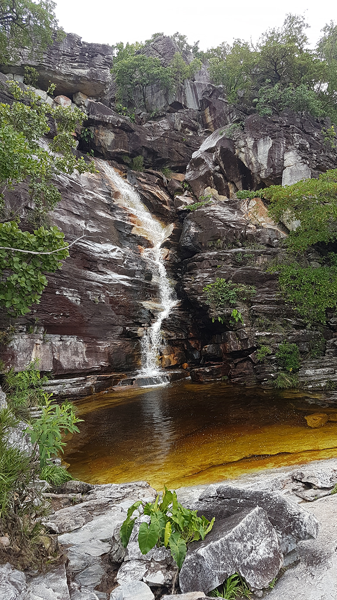
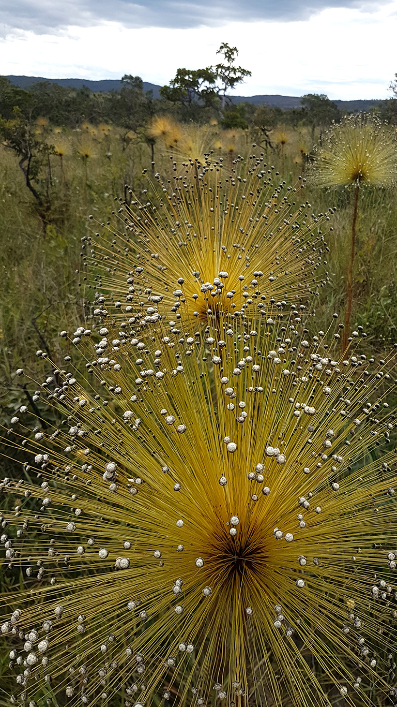

Por que é tão importante contratar um guia em passeios por trilhas e natureza

A Chapada dos Veadeiros é um dos destinos de ecoturismo mais extraordinários do Brasil. Cachoeiras de águas cristalinas, trilhas no cerrado nativo, poços de cor esmeralda e formações rochosas com mais de um bilhão de anos. É também um ambiente selvagem, que exige respeito, preparo e — acima de tudo — conhecimento local.
É aqui que entra o papel insubstituível do guia de turismo credenciado. Mais do que apontar o caminho, o condutor transforma cada passeio numa experiência completa: segura, emocionante, bem registrada em fotos e repleta de descobertas que você jamais faria sozinho.
Segurança: o benefício mais importante
A Chapada dos Veadeiros é linda — e exatamente por isso não deve ser subestimada. Trilhas sem sinalização, rios com variação de correnteza, animais peçonhentos como serpentes, aranhas e escorpiões, e o risco real de cabeça d'água (cheia repentina nos rios) são realidades que quem não conhece a região tende a ignorar.
Os condutores de ecoturismo passam por um curso de 160 horas que inclui técnicas de primeiros socorros, resgate aquático e estágio presencial em cada atrativo. São treinados anualmente pelo Corpo de Bombeiros e atuam com atenção redobrada quando há crianças, idosos ou iniciantes no grupo.

Riscos reais de ir sem guia
- Se perder nas trilhas — muitas sem sinalização adequada, especialmente fora do parque nacional
- Encontro perigoso com animais — jararaca, cascavel, escorpiões e aranhas são comuns no cerrado
- Acidentes em corredeiras e quedas — pedras lisas e correnteza traiçoeira sem o conhecimento do terreno
- Cabeça d'água — enchentes repentinas, especialmente no período de chuvas
- Emergência sem suporte — sem sinal de celular, sem kit de primeiros socorros e sem saber o que fazer
- Risco ampliado para crianças e idosos — sem apoio especializado em terreno irregular e percursos longos
Fotos que viram memórias para a vida toda
Cada atrativo da Chapada tem ângulos privilegiados que só quem conhece o local de cor sabe encontrar. O guia leva o grupo exatamente até esses pontos — e ainda registra os momentos com o olhar de quem já fotografou centenas de grupos naquele mesmo cenário.
Sem guia, você fotografa o que enxerga. Com guia, você fotografa o que a Chapada realmente tem para mostrar. As fotos que você vai guardar para sempre são as que o guia torna possíveis.

Aproveitamento de 100%: nenhum atrativo desperdiçado
Cada atrativo esconde lugares que não aparecem em nenhum mapa turístico comum — piscinas naturais escondidas, trilhas secundárias com pontos de vista inacreditáveis, horários certos para evitar multidões. O guia conhece todos esses segredos porque os vivencia diariamente.
Sabia disso?
Grupos sem guia visitam em média apenas 40% dos pontos mais bonitos de cada atrativo. Com um condutor experiente, o aproveitamento chega a 100% — incluindo mirantes secretos, poços de banho e atalhos que a maioria dos turistas nunca descobre.

Atenção especial para famílias, crianças e idosos
Trilhar com crianças pequenas ou com pessoas da terceira idade exige planejamento diferente: ritmo adaptado, paradas estratégicas, atenção constante ao nível de esforço e — principalmente — um olho sempre atento perto da água.
O guia adapta o roteiro para cada perfil de grupo. Para famílias com crianças, priorizamos trilhas mais curtas com recompensas incríveis ao final. Para grupos de terceira idade, escolhemos percursos com sombra, boa estrutura e paradas confortáveis. Ninguém fica para trás.

Novas amizades e experiências compartilhadas
Passeios em grupos compartilhados são uma das experiências mais ricas que a Chapada pode oferecer. Você chega como desconhecido e volta para casa com novos amigos — pessoas de diferentes cidades, histórias e perspectivas que se unem pela mesma paixão pela natureza.
O guia é também o facilitador dessas conexões. Conhece cada membro do grupo pelo nome, cria um ambiente de confiança e transforma estranhos em companheiros de aventura. Muitas das amizades feitas nas trilhas duram para a vida toda.

Conhecimento local: história, biodiversidade e cultura
A formação do condutor de ecoturismo vai muito além do percurso físico. O guia conhece a história da região, a biodiversidade do cerrado, as lendas locais — inclusive aquelas sobre OVNIs avistados na Chapada — e as características geológicas únicas das rochas com mais de um bilhão de anos.
Cada parada se transforma numa aula viva. Você aprende a identificar plantas medicinais do cerrado, entende por que a água das cachoeiras tem essa cor única e descobre por que a NASA considera esta região o lugar mais iluminado do mundo.
O lado humano que faz toda a diferença
Conduzir grupos pela Chapada dos Veadeiros não é apenas um trabalho — é uma vocação. Cada passeio carrega uma história. Cada turista chega com uma expectativa e o guia tem o compromisso de superá-la.

Em um passeio bem conduzido, espontaneidade e humanidade aparecem naturalmente. Isso é o que torna cada experiência única e inesquecível.
Resumo: tudo o que você ganha com um guia
- Segurança total — primeiros socorros, prevenção e orientação em terreno e água
- Fotos incríveis — ângulos e horários que valorizam cada cenário
- 100% de aproveitamento — mirantes, poços e detalhes que passariam despercebidos
- Você não se perde — bifurcações e trechos confusos são comuns fora dos circuitos óbvios
- Conhecimento vivo — história, geologia, biodiversidade e cultura regional
- Foco em família — ritmo e rotas adequados a crianças e idosos
- Novas amizades — grupos compartilhados e bom clima entre visitantes
- Eficiência — menos tempo perdido e mais momento marcante por dia
É obrigatório contratar um guia na Chapada?
Em alguns atrativos, sim. O Parque Nacional da Chapada dos Veadeiros exige condutores credenciados para acesso a determinadas trilhas. Proprietários de atrativos particulares também costumam exigir a presença de guia para garantir a segurança de seus visitantes.
Nos demais atrativos, a contratação pode não ser obrigatória — mas é essencial para quem quer segurança e aproveitamento máximo. Alguns atrativos inclusive oferecem desconto na entrada para grupos acompanhados de guia credenciado pelo Cadastur.
Importante
Guias credenciados pelo Cadastur (Ministério do Turismo) passaram por formação oficial, seguro de responsabilidade civil e atualização anual. Sempre verifique a credencial antes de contratar.
Pronto para viver a Chapada do jeito certo?
Fale agora com o Diego Navi e planeje seu passeio com segurança, aproveitamento máximo e fotos que você vai guardar para sempre.
Falar no WhatsAppDiego Navi Marques Carvalho
Condutor de Ecoturismo · Credenciado Cadastur · Chapada dos Veadeiros
Guia local com mais de uma década de experiência na Chapada dos Veadeiros. Especialista em turismo de aventura, familiar e terceira idade. Credenciado pelo Ministério do Turismo (Cadastur) e treinado anualmente pelo Corpo de Bombeiros de Goiás.